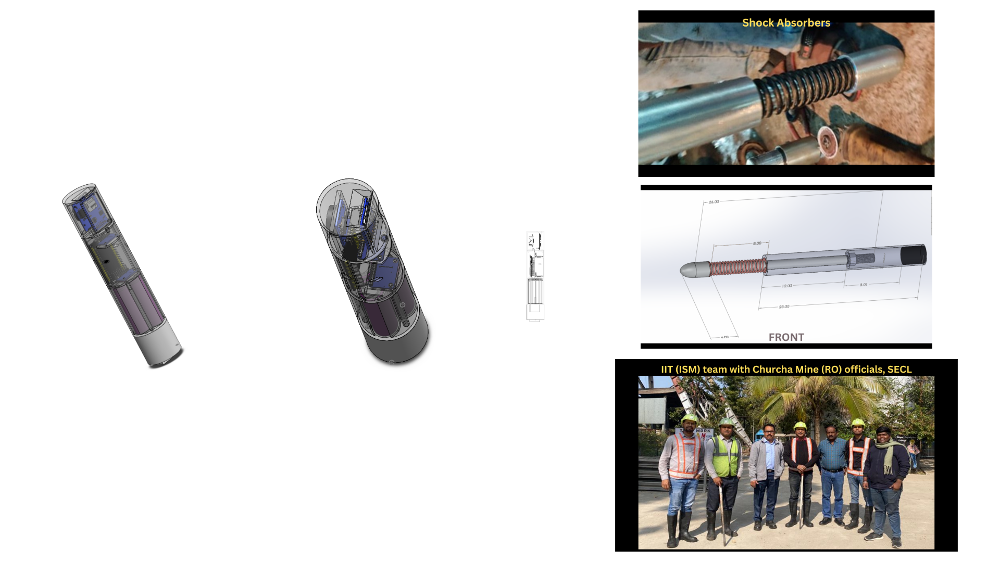

Electronic Borehole Compass for Real-Time Borehole Trajectory Measurement and Borehole Survey

Overview
Built an electronic borehole compass combining accelerometer, gyroscope, and magnetometer sensor fusion. Integrated Bluetooth and 3D trajectory reconstruction for real-time surveying; field-tested in underground mines deeper than 200 m.